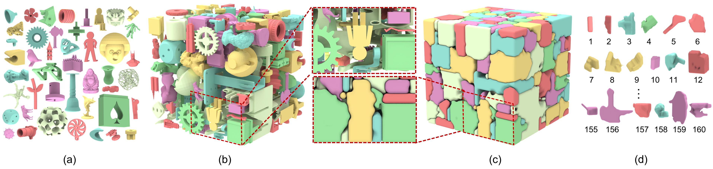
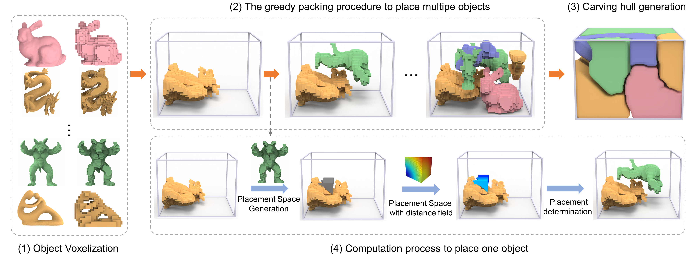
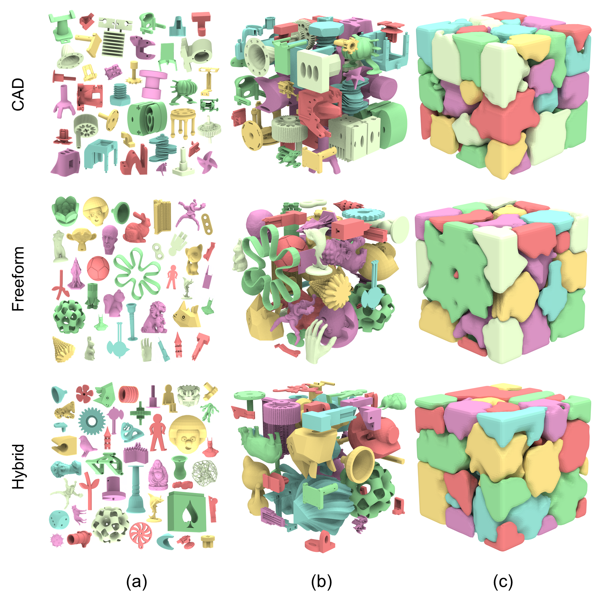
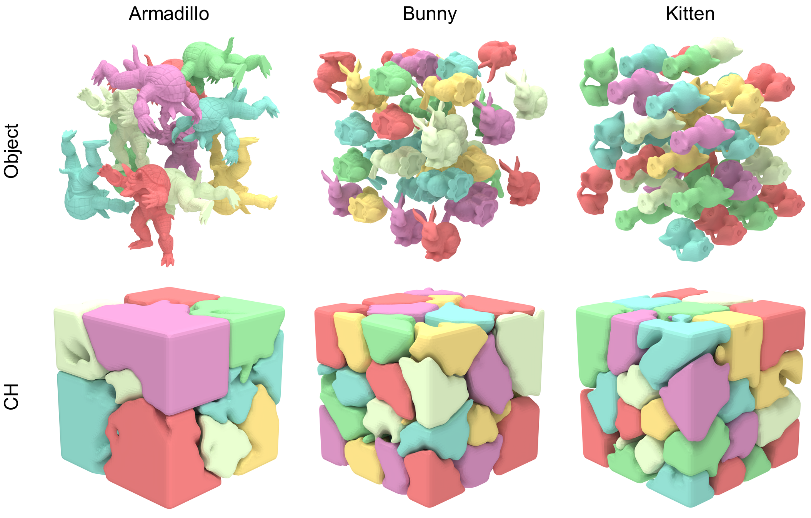
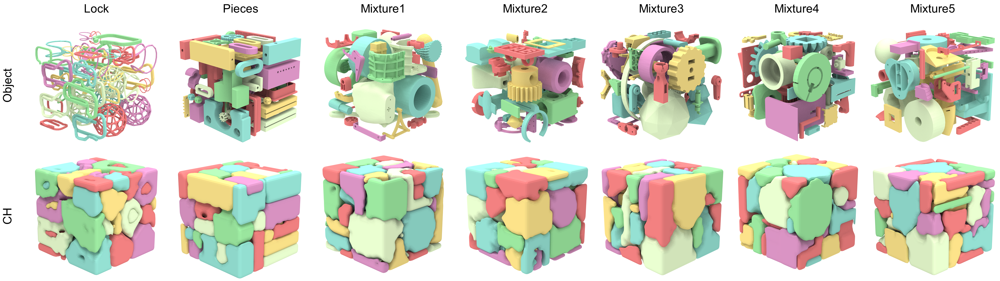
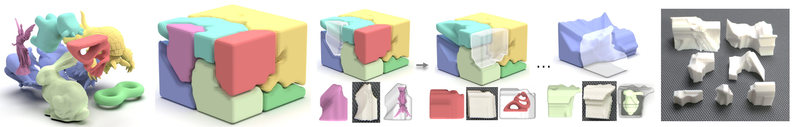
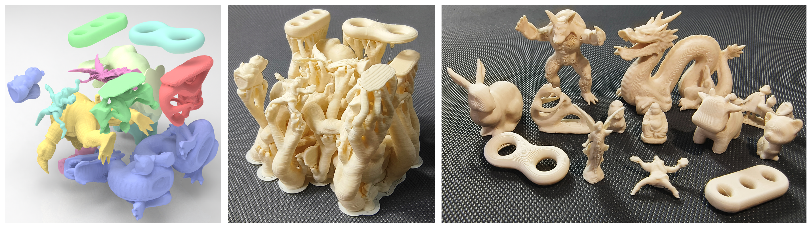

Chapper: Carvable Hull-and-Pack for Subtractive Manufacturing
ACM SIGGRAPH Asia 2025 (Journal track, TOG)

Fig. 1. Our Chapper framework achieves compact packing with high space utilization while ensuring all objects satisfy the carvable constraints. We introduce a novel carving hull extraction method that computes a carving hull for each object, capturing both its shape and subtractive manufacturability, constrained by neighboring geometry and encoding machining paths. This figure illustrates our method packing 160 complex benchmark objects (a) densely into a cube (b) with 21.6 % space utilization. It also produces a disassembly sequence (d) and corresponding carving hulls (c). Each object is fully enclosed by its carving hull, which guides toolpath generation and enables feasible disassembly.
Abstract
Tightly cutting raw materials into a set of carvable objects, known as
the
stock cutting problem, is a necessary step in subtractive manufacturing.
This problem can be framed as a 3D irregular object packing task, aiming
to fit as many objects as possible within a predefined container. While
previous packing algorithms can generate dense, non-overlapping, and even
interlocking-free configurations, they cannot satisfy carvable constraints.
This paper introduces the carvable hull-and-pack problem, which inte-
grates irregular object packing with subtractive manufacturing. This problem
is more challenging than general 3D packing, as it requires ensuring the
carvability of each object and generate the disassembly sequence. To address
this, we first define a novel geometric hull, called carving hull, which ac-
counts for both the object's shape and the cutter accessibility, constrained by
the real-time distribution of surrounding objects. Then we present Chapper,
an effective solution to co-optimize the planning of carving hull pack and
disassembly sequence to maximize space utilization while preserving the
carvable constraints. Given a raw material and a list of generic 3D objects,
our algorithm starts with densely packing each object into the material
with a pre-computed placement order, while simultaneously maintaining
a valid disassembly sequence. We solve the complex object-to-object and
cutter-to-object collisions by leveraging a discrete voxel representation. The
carvability of each object is also guaranteed in the packing process, where
we define a novel carvable metric to determine whether each object is carv-
able or not. Based on the packing result and the disassembly sequence, we
propose a clipped Voronoi-based volume decomposition method to generate
the actual carving hull for each object and finally create feasible cutting
tool paths on the carving hulls. Our approach effectively packs CAD and
freeform datasets, exhibiting a unique space utilization rate performance
compared to the alternative baseline.
Video
Pipeline

Fig. 2. Overview of the proposed Chapper algorithm. We begin by voxelizing the input objects (left row) and then apply a greedy algorithm to pack them in descending order of volume (top row). The bottom row illustrates the computation process for placing a single object into the container, as detailed in Sections 4.1,4.2, 4.3. First, we generate a feasible placement space that satisfies the collision-free constraint and partially fulfills the cutter-collision-free constraint. Next, we organize voxel positions within this space using a distance field and determine the optimal placement location for the object while verifying the carvable constraints. Additionally, throughout the packing process, we ensure a feasible disassembly sequence for each object.
Results

Fig. 3. Our 3D packing results on three proposed datasets, including irreg- ular CAD, freeform shapes, and hybrid. It ensures a high space utilization rate while allowing the cutter to access the gaps between the models for cutting.

Fig. 4. Testing our method in single-object scenarios to isolate the effects of packing-order variability.

Fig. 5. Packing results of our approach on the LOCKS, PIECES, and MIXTURE datasets demonstrate its effectiveness across diverse scenarios.

Fig. 6. Physical experiment for five-axis CNC machining. From left to right: our packing outcomes, the corresponding carving hulls, and the machining objects post-disassembly.

Fig. 7. Physical experiment for 3D printing support removal. From left to right: our packing outcomes, the printed item with supports, and objects post-disassembly with a handheld rotary tools.
Downloads